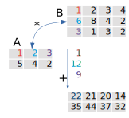
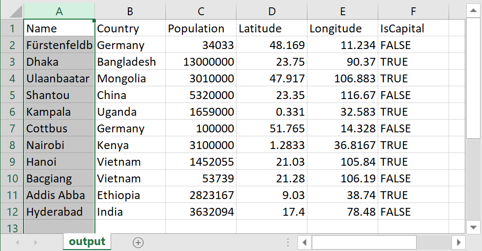

1 - pi + exp(1.7)[1] 3.332355Angewandte Statistik – Ein Praxiskurs
2025-09-16
Engine and Control
Citation
Cite R and optionally RStudio.
R Core Team (2022). R: A language and environment for statistical computing. R Foundation for Statistical Computing, Vienna, Austria. https://www.R-project.org/
RStudio Team (2022). RStudio: Integrated Development Environment for R. RStudio, PBC, Boston, MA URL http://www.rstudio.com/
Expression
[1] indicates that the value shown at the beginning of the line is the first (and here the only) elementAssignment of constants and variables to a variable
Assignment in opposite direction (rarely used)
Multiple assignment
Do not use the following constructs
A syntactically valid variable name consists of:
Special characters, except _ and . (underscore and dot) are not allowed.
International characters (e.g German umlauts ä, ö, ü, …) are possible, but not recommended.
correct:
x, y, X, x1, i, j, kvalue, test, myVariableName, do_somethingforbidden:
1x, .1x (starts with a number)!, @, \$, #, space, comma, semicolon and other special charactersreserved words cannot be used as variable names:
if, else, repeat, while, function, for, in, next, breakTRUE, FALSE, NULL, Inf, NaN, NA, NA_integer_, NA_real_, NA_complex_, NA_character\_..., ..1, ..2Note: R is case sensitive, x and X, value and Value are different.
| operator | symbol |
|---|---|
| Addition | + |
| Subtraction | - |
| Negation | - |
| Multiplication | * |
| Division | / |
| Modulo | %% |
| Integer Divison | %/% |
| Power | ^ |
| Matrix product | %*% |
| Outer product | %o% |
| operator | symbol |
|---|---|
| Negation | ! |
| And | & |
| Or | | |
| Equal | == |
| Unequal | != |
| Less than | < |
| Greater than | > |
| Less or equal | <= |
| Greater or equal | >= |
| Assignment | <- |
| Element of a list | $ |
| Pipeline | |> |
… and more
Pre-defined functions:
sin(x), log(x)plot(x), print(x)hist(x)Arguments: mandatory or optional, un-named or named
plot(1:4, c(3, 4, 3, 6), type = "l", col = "red")User-defined functions:
\(\rightarrow\) Functions have always a name followed by arguments in round parentheses.
vector, matrix, list, data.frame, …We start with vectors, matrices and arrays, and data frames.
vectors = 1D, matrices = 2D and arrays = n-dimensional
data are arranged into rows, columns, layers, …
data filled in column-wise, can be changed
create vector
[,1] [,2] [,3] [,4]
[1,] 1 6 11 16
[2,] 2 7 12 17
[3,] 3 8 13 18
[4,] 4 9 14 19
[5,] 5 10 15 20 [,1] [,2] [,3] [,4]
[1,] 1 2 3 4
[2,] 5 6 7 8
[3,] 9 10 11 12
[4,] 13 14 15 16
[5,] 17 18 19 20Original matrix
[,1] [,2] [,3] [,4] [,5]
[1,] 1 5 9 13 17
[2,] 2 6 10 14 18
[3,] 3 7 11 15 19
[4,] 4 8 12 16 20Inverted row order
Indirect index
[,1] [,2] [,3] [,4] [,5]
[1,] 1 9 5 17 13
[2,] 2 10 6 18 14
[3,] 1 9 5 17 13
[4,] 2 10 6 18 14Logical selection
Surprise?
Matrix
Diagonal matrix
Element wise addition and multiplication
Two matrices: A and B
Multiplication: \(A \cdot B\)

Matrix
[,1] [,2] [,3]
[1,] 1 4 5
[2,] 2 3 4
[3,] 3 2 6Transpose
Inverse (\(X^{-1}\))
[,1] [,2] [,3]
[1,] -0.6667 0.9333 -0.0667
[2,] 0.0000 0.6000 -0.4000
[3,] 0.3333 -0.6667 0.3333\(I\): identity matrix
\[\begin{align} 3x && + && 2y && - && z && = && 1 \\ 2x && - && 2y && + && 4z && = && -2 \\ -x && + && 1/2y && - && z && = && 0 \end{align}\]
\[\begin{align} Ax &= b\\ x &= A^{-1}b \end{align}\]
read.table or read.csv Name Country Population Latitude Longitude IsCapital
1 Fürstenfeldbruck Germany 34033 48.1690 11.2340 FALSE
2 Dhaka Bangladesh 13000000 23.7500 90.3700 TRUE
3 Ulaanbaatar Mongolia 3010000 47.9170 106.8830 TRUE
4 Shantou China 5320000 23.3500 116.6700 FALSE
5 Kampala Uganda 1659000 0.3310 32.5830 TRUE
6 Cottbus Germany 100000 51.7650 14.3280 FALSE
7 Nairobi Kenya 3100000 1.2833 36.8167 TRUE
8 Hanoi Vietnam 1452055 21.0300 105.8400 TRUE
9 Bacgiang Vietnam 53739 21.2800 106.1900 FALSE
10 Addis Abba Ethiopia 2823167 9.0300 38.7400 TRUE
11 Hyderabad India 3632094 17.4000 78.4800 FALSE\(\rightarrow\) download data set
dec=".", column separator is sep=","Example CSV file (Data from Wikipedia, 2023)
Name,Country,Population,Latitude,Longitude
Dhaka,Bangladesh,10278882,23.75,90.37
Ulaanbaatar,Mongolia,1672627,47.917,106.883
Shantou,China,5502031,23.35,116.67
Kampala,Uganda,1680600,0.331,32.583
Berlin,Germany,3850809,52.52,13.405
Nairobi,Kenya,4672000,1.2833,36.8167
Hanoi,Vietnam,8435700,21.03,105.84
Addis Abba,Ethiopia,3945000,9.03,38.74
Hyderabad,India,9482000,17.4,78.48Hints
dec = "," and sep = ";"dec = "." and sep = ";"read-functions for different file types.To avoid confusion, we use only the following:
Base R
read.table(): this is the most flexible standard function, see help file for detailsread.csv(): default options for standard csv files (with dec="." and sep=,)Tidyverse readr-package
read_delim(): similar to read.table() but more modern, automatic and fasterread_csv(): similar to read.csv() with more automatism, e.g. date detectionread.table()read.table(file, header = FALSE, sep = "", quote = "\"'",
dec = ".", numerals = c("allow.loss", "warn.loss", "no.loss"),
row.names, col.names, as.is = !stringsAsFactors, tryLogical = TRUE,
na.strings = "NA", colClasses = NA, nrows = -1,
skip = 0, check.names = TRUE, fill = !blank.lines.skip,
strip.white = FALSE, blank.lines.skip = TRUE,
comment.char = "#",
allowEscapes = FALSE, flush = FALSE,
stringsAsFactors = FALSE,
fileEncoding = "", encoding = "unknown", text, skipNul = FALSE)Examples
Most of our course examples are plain CSV files, so we can use read.csv() or read_csv().
# A tibble: 11 × 6
Name Country Population Latitude Longitude IsCapital
<chr> <chr> <dbl> <dbl> <dbl> <lgl>
1 Fürstenfeldbruck Germany 34033 48.2 11.2 FALSE
2 Dhaka Bangladesh 13000000 23.8 90.4 TRUE
3 Ulaanbaatar Mongolia 3010000 47.9 107. TRUE
4 Shantou China 5320000 23.4 117. FALSE
5 Kampala Uganda 1659000 0.331 32.6 TRUE
6 Cottbus Germany 100000 51.8 14.3 FALSE
7 Nairobi Kenya 3100000 1.28 36.8 TRUE
8 Hanoi Vietnam 1452055 21.0 106. TRUE
9 Bacgiang Vietnam 53739 21.3 106. FALSE
10 Addis Abba Ethiopia 2823167 9.03 38.7 TRUE
11 Hyderabad India 3632094 17.4 78.5 FALSE File –> Import Dataset
Several options are available:
English number format (“.” as decimal):
German number format (“,” as decimal):
 ## Creation of data frames
csv-files.Inline creation of a data frame
Matrix to data frame
V1 V2 V3 V4
1 1 5 9 13
2 2 6 10 14
3 3 7 11 15
4 4 8 12 16Data frame to matrix
Append column
Or simply
Data frame with character column
V1 V2 V3 V4 id
[1,] "1" "5" " 9" "13" "first"
[2,] "2" "6" "10" "14" "second"
[3,] "3" "7" "11" "15" "third"
[4,] "4" "8" "12" "16" "fourth"Create a data frame from a matrix
V1 V2 V3 V4
1 1 5 9 13
2 2 6 10 14
3 3 7 11 15
4 4 8 12 16Add names to the columns
Select 3 columns and change order
A data frame
A single value
Complete column
Complete row
Examples
hist:List of 6
$ breaks : num [1:13] -3 -2.5 -2 -1.5 -1 -0.5 0 0.5 1 1.5 ...
$ counts : int [1:12] 1 1 3 13 12 14 23 19 4 7 ...
$ density : num [1:12] 0.02 0.02 0.06 0.26 0.24 0.28 0.46 0.38 0.08 0.14 ...
$ mids : num [1:12] -2.75 -2.25 -1.75 -1.25 -0.75 -0.25 0.25 0.75 1.25 1.75 ...
$ xname : chr "rnorm(100)"
$ equidist: logi TRUE
- attr(*, "class")= chr "histogram"Nested list (lists within a list)
str shows tree-like structure
List of 2
$ a: int [1:3] 5 6 7
$ b:List of 3
..$ a: int [1:10] 1 2 3 4 5 6 7 8 9 10
..$ b: num [1:3] 1 2 3
..$ x: chr "hello"Convert list to vector
Flatten list (remove only top level of list)
During creation
With names-function
Original names:
Rename list elements:
The names-functions works also with vectors. The pre-defined vectors letters contains lower case and LETTERS uppercase letters:
Example data frame
Apply a function to all elements of a list
for-loopA simple for-loop
Nested for-loops
repeat and while-loopsRepeat until a break condition occurs
Loop as long as a whilecondition is TRUE:
In many cases, loops can be avoided by using vectors and matrices or apply.
Column means of a data frame
## a data frame
df <- data.frame(
N=1:4, P=5:8, O2=9:12, C=13:16
)
## loop
m <- numeric(4)
for(i in 1:4) {
m[i] <- mean(df[,i])
}
m[1] 2.5 6.5 10.5 14.5\(\rightarrow\) easier without loop
… also possible colMeans
The same series:
\[ \sum_{k=1}^{\infty}\frac{(-1)^{k-1}}{2k-1} = 1 - \frac{1}{3} + \frac{1}{5} - \frac{1}{7} \]
x <- 0
k <- 0
repeat {
k <- k + 1
enum <- (-1)^(k-1)
denom <- 2*k-1
delta <- enum/denom
x <- x + delta
if (abs(delta) < 1e-6) break
}
4 * x[1] 3.141595The example before showed already an if-clause. The syntax is as follows:
Often, a vectorized ifelse is more appropropriate than an if-function.
Let’s assume we have a data set of chemical measurements x with missing NA values, and “nondetects” that are encoded with -99. First we want to replace the nontetects with half of the detection limit (e.g. 0.5):
[1] 3.0 6.0 NA 5.0 4.0 0.5 7.0 NA 8.0 0.5 0.5 9.0Now let’s remove the NAs:
Follow-up presentations:
More details in the official R manuals, especially in “An Introduction to R”
Many videos can be found on Youtube, at the Posit webpage and somewhere else.
This tutorial was made with Quarto
Author: tpetzoldt +++ Homepage +++ Github page